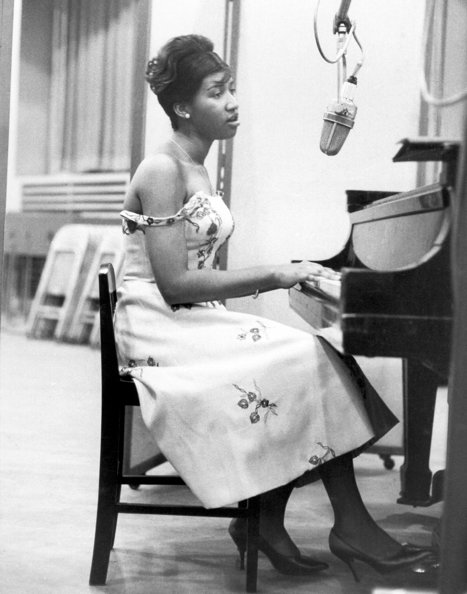
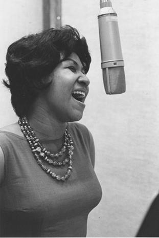
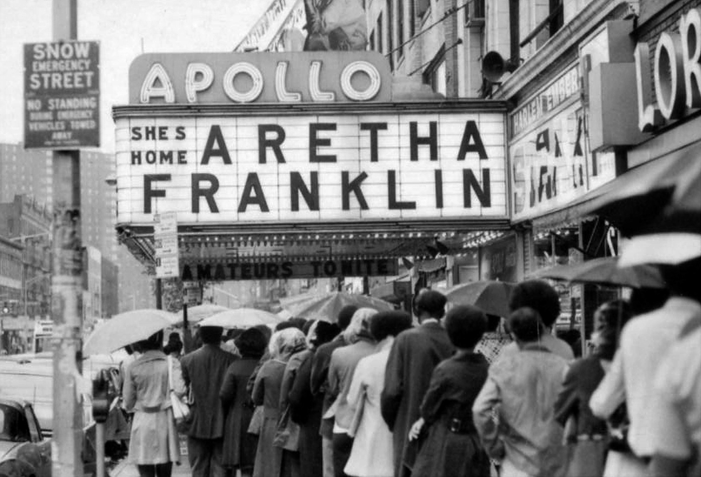
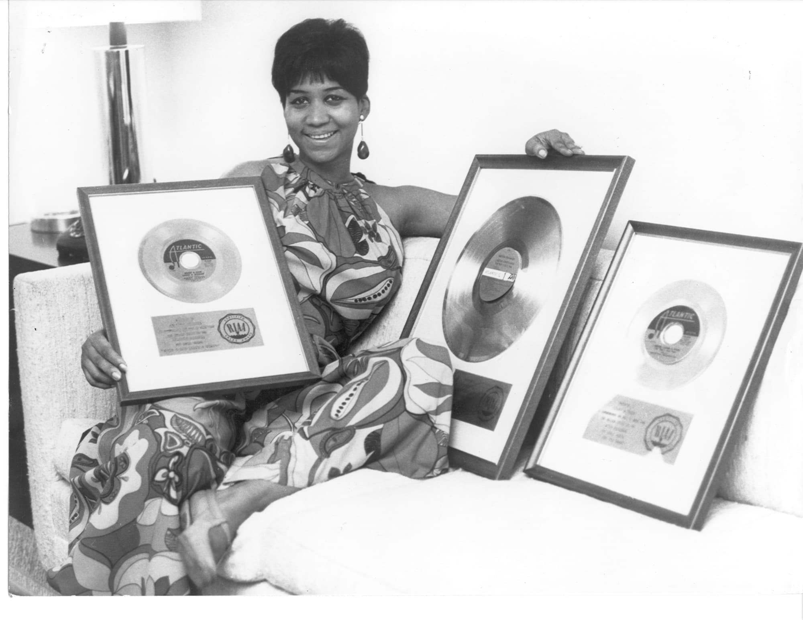
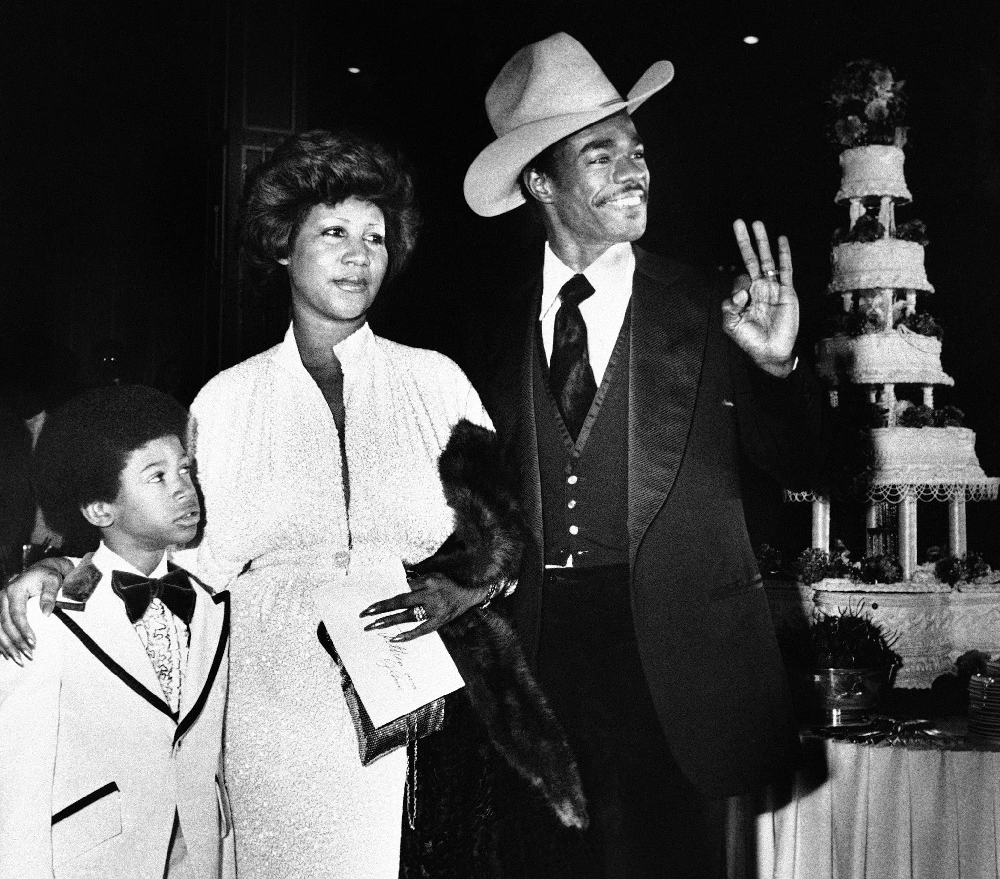
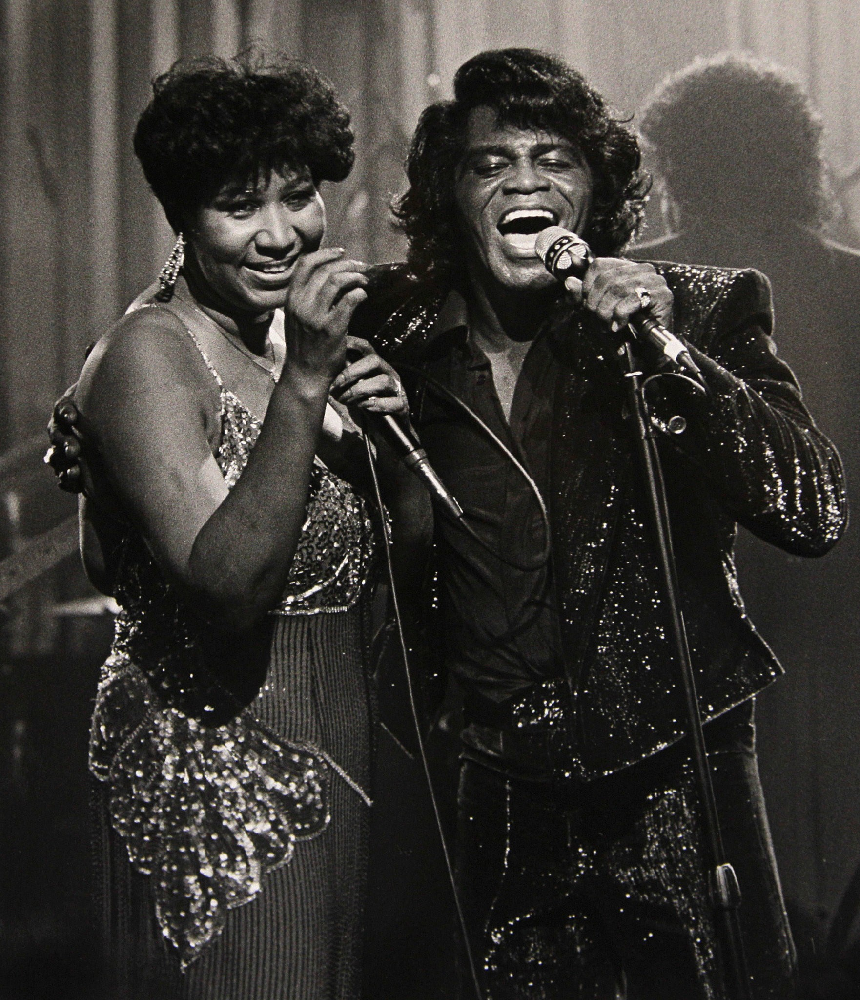
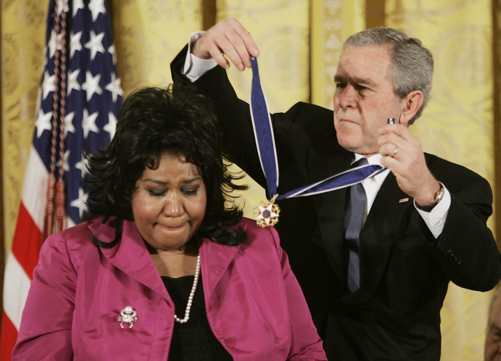

In a musical career of more than five decades, Aretha Franklin had more than 100 singles on the Billboard charts. But more important, says Jon Pareles, chief popular music critic for The New York Times, she freed other singers to let their voices fly.
This piece looks to conmemorate the legacy of Aretha Franklin, universally acclaimed as the "Queen of Soul" and one of America's greatest singers in any style, who died on Thursday at her home in Detroit. She was 76.The cause was advanced pancreatic cancer of the neuroendocrine type, her publicist, Gwendolyn Quinn, said.
In her indelible late-1960s hits, Ms. Franklin brought the righteous fervor of gospel music to secular songs that re about much more than romance. Hits like "Do Right Woman - Do Right Man," "Think",(You Make Me Feel Like) A Natural Woman" and "Chain of Fools" defined a modern female archetype: sensual and strong, long-suffering but ultimately indomitable, loving but not to be taken for granted.
When Ms. Franklin sang "Respect," the Otis Redding song that became her signature, it was never just about how a woman wanted to be greeted by a spouse coming home from work. It was a demand for equality and freedom and a harbinger of feminism, carried by a voice that would accept nothing less.
Ms. Franklin had a grandly celebrated career. She placed more than 100 singles in the Billboard charts, including 17 Top 10 pop singles and 20 No. 1 R&B hits. She received 18 competitive Grammy Awards, along with a lifetime achievement award in 1994. She was the first woman inducted into the Rock & Roll Hall of Fame, in 1987, its second year. She sang at the inauguration of Barack Obama in 2009, at pre-inauguration concerts for Jimmy Carter in 1977 and Bill Clinton in 1993, and at both the Democratic National Convention and a memorial service for the Rev. Dr. Martin Luther King Jr. in 1968.
Succeeding generations of R&B singers, among them Natalie Cole, Whitney Houston, Mariah Carey and Alicia Keys, openly emulated her. When Rolling Stone magazine put Ms. Franklin at the top of its 2010 list of the "100 Greatest Singers of All Time," Mary J. Blige paid tribute:
"Aretha is a gift from God. When it comes to expressing yourself through song, there is no one who can touch her. She is the reason why women want to sing."
[Read The New York Time's appraisal of Aretha Franklin here.]
Ms. Franklin's airborne, constantly improvisatory vocals had their roots in gospel. It was the music she grew up on in the Baptist churches where her father, the Rev. Clarence LaVaughn Franklin, known as C. L., preached. She began singing in the choir of her father's New Bethel Baptist Church in Detroit, and soon became a star soloist.
Gospel shaped her quivering swoops, her pointed rasps, her galvanizing buildups and her percussive exhortations; it also shaped her piano playing and the call-and-response vocal arrangements she shared with her backup singers. Through her career in pop, soul and R&B, Ms. Franklin periodically recharged herself with gospel albums: "Amazing Grace" in 1972 and "One Lord, One Faith, One Baptism," recorded at the New Bethel church, in 1987.
But gospel was only part of her vocabulary. The playfulness and harmonic sophistication of jazz, the ache and sensuality of the blues, the vehemence of rock and, later, the sustained emotionality of opera were all hers to command.
Ms. Franklin did not read music, but she was a consummate American singer, connecting everywhere. In an interview with The New York Times in 2007, she said her father had told her that she "would sing for kings and queens."
"Fortunately I've had the good fortune to do so," she added. "And presidents."
For all the admiration Ms. Franklin earned, her commercial fortunes were uneven, as her recordings moved in and out of sync with the tastes of the pop market.
After her late-1960s soul breakthroughs and a string of pop hits in the early 1970s, the disco era sidelined her. But Ms. Franklin had a resurgence in the 1980s with her album "Who's Zoomin' Who" and its Grammy-winning single, "Freeway of Love," and she followed through in the next decades as a kind of soul singer emeritus: an indomitable diva and a duet partner conferring authenticity on collaborators like George Michael and Annie Lennox. Her latter-day producers included stars like Luther Vandross and Lauryn Hill, who had grown up as her fans. Onstage, Ms. Franklin proved herself night after night, forever keeping audiences guessing about what she would do next and marveling at how many ways her voice could move.
Aretha Louise Franklin was born in Memphis on March 25, 1942. Her mother, Barbara Siggers Franklin, was a gospel singer and pianist. Her parents separated when Aretha was 6, leaving her in her father's care. Her mother died four years later after a heart attack.
C. L. Franklin's career as a pastor led the family from Memphis to Buffalo and then to Detroit, where he joined the New Bethel Baptist Church in 1946. With his dynamic sermons broadcast nationwide and recorded, he became known as "the man with the golden voice."
The Franklin household was filled with music. Mr. Franklin welcomed visiting gospel and secular musicians: the jazz pianist Art Tatum, the singer Dinah Washington, and gospel figures like the young Sam Cooke (before his turn to pop), Clara Ward, Mahalia Jackson and James Cleveland, who became Ms. Franklin's mentors.
Future Motown artists like Smokey Robinson and Diana Ross lived nearby. Aretha's sisters, Erma and Carolyn, also sang and wrote songs, among them "Piece of My Heart," a song Erma Franklin recorded before Janis Joplin did, and Carolyn Franklin's "Ain't No Way," a hit for Aretha. The sisters also provided backup vocals for Ms. Franklin on songs like "Respect." From 1968 until his death in 1989, her brother Cecil was her manager.
Ms. Franklin started teaching herself to play the piano - there were two in the house - before she was 10, picking up songs from the radio and from Ms. Ward's gospel records. Around the same time, she stood on a chair and sang her first solos in church. In David Ritz's biography "Respect," Cecil Franklin recalled that his sister could hear a song once and immediately sing and play it. "Her ear was infallible," he said..
At 12, Ms. Franklin joined her father on tour, sharing concert bills with Ms. Ward and other leading gospel performers. Recordings of a 14-year-old Ms. Franklin performing in churches - playing piano and belting gospel standards to ecstatic congregations - were released in 1956. Her voice was already spectacular.
But Ms. Franklin became pregnant, dropped out of high school and had a child two months before her 13th birthday. Soon after that she had a second child by a different father. (She never revealed publicly who fathered them, but Mr. Ritz's book quotes Cecil as saying the father of the first was "just a guy she knew from school.")
Those sons, Clarence and Edward Franklin, survive her, along with two others, Ted White Jr. and KeCalf Franklin (her son with Ken Cunningham, a boyfriend during the 1970s), and four grandchildren.
In the late 1950s, following the example of Sam Cooke — who left the gospel group the Soul Stirrers and started a solo career with "You Send Me" in 1957 - Ms. Franklin decided to build a career in secular music. Leaving her children with family in Detroit, she moved to New York City. John Hammond, the Columbia Records executive who had championed Billie Holiday and would also bring Bob Dylan and Bruce Springsteen to the label, signed the 18-year-old Ms. Franklin in 1960.
Mr. Hammond saw Ms. Franklin as a jazz singer tinged with blues and gospel. He recorded her with the pianist Ray Bryant's small groups in 1960 and 1961 for her first studio album, "Aretha," which sent two singles to the R&B Top 10: "Today I Sing the Blues" and "Won't Be Long." The annual critics' poll in the jazz magazine DownBeat named her the new female vocal star of the year.
Her next album, "The Electrifying Aretha Franklin," featured jazz standards and used big-band orchestrations; it gave her a Top 40 pop single in 1961 with "Rock-a-Bye Your Baby With a Dixie Melody."
Her later Columbia albums were scattershot, veering in and out of jazz, pop and R&B. Ms. Franklin met and married Ted White in 1961 and made him her manager; he shares credit on some of the songs Ms. Franklin wrote in the 1960s, including "Dr. Feelgood." In 1964 they had a son, Ted White Jr., who would lead his mother's band decades later. (She divorced Mr. White, after a turbulent marriage, in 1969.)
Mr. White later said his strategy was for Ms. Franklin to switch styles from album to album, to reach a variety of audiences, but the results - a Dinah Washington tribute, jazz standards with strings, remakes of recent pop and soul hits - left radio stations and audiences confused. When her Columbia contract expired in 1966, Ms. Franklin signed with Atlantic Records, which specialized in rhythm and blues.
Jerry Wexler, the producer who brought Ms. Franklin to Atlantic, persuaded her to record in the South. Ms. Franklin spent one night in January 1967 at Fame Studios in Muscle Shoals, Ala., recording with the Muscle Shoals rhythm section, the backup band behind dozens of 1960s soul hits. Ms. Franklin shaped the arrangements and played piano herself, as she had rarely done in the studio since her first gospel recordings.
The new songs were rooted in blues and gospel. And the combination finally ignited the passion in Ms. Franklin's voice, the spirit that was only glimpsed in many of her Columbia recordings.
The Muscle Shoals session broke down, with just one song complete and another half-finished, in a drunken dispute between a trumpet player and Mr. White. He and Ms. Franklin returned to New York. Yet when the song completed in that session, "I Never Loved a Man (the Way I Love You)," was released as a single, it reached No. 1 on the R&B charts and No. 9 on the pop charts, eventually selling more than a million copies.
Some of the Muscle Shoals musicians came north to complete the album in New York. And with that album, "I Never Loved a Man the Way I Love You," the supper-club singer of Ms. Franklin's Columbia years made way for the "Queen of Soul."
"We were simply trying to compose real music from my heart," Ms. Franklin said in her autobiography, "Aretha: From These Roots," written with Mr. Ritz and published in 1999.
"Respect," recorded on Valentine's Day 1967 and released in April, was a bluesy demand for dignity, as well as an instruction to "give it to me when you get home" and "take care of T.C.B." (The letters stood for "taking care of business.") Her version of the song resonated beyond individual relationships to the civil rights, counterculture and feminism movements.
"It was the need of the nation, the need of the average man and woman in the street, the businessman, the mother, the fireman, the teacher - everyone wanted respect," she wrote in her autobiography.
"Respect" surged to No. 1 and would bring Ms. Franklin her first two Grammy Awards, for best R&B recording and best solo female R&B performance (an award she won each succeeding year through 1975). By the end of 1968, she had made three more albums for Atlantic and had seven more Top 10 pop hits, including "Baby I Love You," "Chain of Fols," "Think" (written by Ms. Franklin and Mr. White) and "I Say a Little Prayer."
But amid the success, Ms. Franklin's personal life was in upheaval. Songs like "Think," "Chain of Fools" and "The House That Jack Built" hinted at marital woes that she kept private. She fought with her husband and manager, Mr. White, who had roughed her up in public, a 1968 Time magazine cover story noted, and whose musical decisions had grown increasingly counterproductive. Before their divorce in 1969, she dropped him as manager and eventually filed restraining orders against him. She also went through a period of heavy drinking before getting sober in the 1970s.
Her early 1970s pop hits, like her own "Day Dreaming" and the Stevie Wonder composition "Until You Come Back to Me (That's What I'm Gonna Do)," took a lighter, more lilting tone, a contrast to her rip-roaring 1972 gospel album, "Amazing Grace," which sold more than two million copies, making it one of the best-selling gospel albums of all time. Ms. Franklin recorded steadily through the 1970s and continued to have rhythm-and-blues hits like "Angel," a No. 1 R&B single in 1973 written by her sister Carolyn.
But her pop presence waned in the disco era, and her 1976 album, "Sparkle," written and produced by Curtis Mayfield, was her last gold album of the decade. It included "Something He Can Feel," a No. 1 R&B single. When Ms. Franklin made a showstopping appearance as a waitress in the 1980 movie "The Blues Brothers," she revived an oldie: her 1968 song "Think."
Ms. Franklin was married to the actor Glynn Turman from 1978 to 1984, and the divorce was amicable enough for her to sing the title song for the television series "A Different World" when Mr. Turman joined its cast in 1988.
Ms. Franklin's father was shot during a break-in at his home in 1979 and stayed in a coma until his death in 1984. During those years Ms. Franklin shuttled monthly between her home in California and Detroit. As her marriage to Mr. Turman was ending, she moved back to Detroit in 1982.
Ms. Franklin was deeply traumatized in 1983 by a ride through turbulence in a two-engine plane that was "dipsy-doodling all over the place," she recalled. She gave up flying, traveling instead by bus to her shows, and ended all international performances. In recent years she had hoped to desensitize herself and fly again, "even if it's just one more time," she said in 2007.
Ms. Franklin changed labels in 1980, to Arista. There, her albums mingled remakes of 1960s and '70s hits - "Jumpin' Jack Flash," "Everyday People," "Hold On, I'm Comin'," "What a Fool Believes" - with contemporary songs.
Luther Vandross's production of her 1982 album, "Jump to It," restored her to the R&B charts, where it reached No. 1. But Ms. Franklin did not reconquer the pop charts until 1985, with the million-selling, synthesizer-driven album "Who's Zoomin' Who?" The singles "Freeway of Love" and "Who's Zoomin' Who?," both produced by Narada Michael Walden, placed Ms. Franklin back in the pop Top 10, and a collaboration with Eurythmics, "Sisters Are Doin' It for Themselves," reached No. 18.
Ms. Franklin had her last No. 1 pop hit with "I Knew You Were Waiting (For Me)," a duet with George Michael from her 1986 album, "Aretha." Her 1987 gospel album, "One Lord, One Faith, One Baptism,"featured performances with her sisters Carolyn and Erma, and with Mavis Staples of the Staple Singers, as well as preaching from the Rev. Jesse Jackson and the Rev. Cecil Franklin.
Ms. Franklin recorded more duets (with Elton John, Whitney Houston and James Brown) on "Through the Storm" in 1989, and she made another attempt to connect with youth culture on "What You See Is What You Sweat" in 1991. She released only a few songs - singles and soundtrack material - through the mid-1990s.
But she rallied in 1998 with televised triumphs. She made a noteworthy appearance at the 1998 Grammy Awards, substituting at the last minute for the ailing Luciano Pavarotti by singing a Puccini aria, Nessun dorma," to overwhelming effect. On "Divas Live," for VH1, she steamrollered her fellow stars in duets, among them Mariah Carey and Celine Dion. In the meantime, she had been working with younger producers again for her 1998 album, "A Rose Is Still a Rose"; the title track, produced by Lauryn Hill, reached No. 26 on the pop chart. After her 2003 album, "So Damn Happy," Ms. Franklin left Arista, saying she would record independently.
Arista released the collection "Jewels in the Crown: All-Star Duets With the Queen" in 2007, including a previously unreleased song with the "American Idol" winner Fantasia. Ms. Franklin said in 2007 that she had completed an album to be called "Aretha: A Woman Falling Out of Love," with songs she had written and produced herself, but it was not released until 2011, on her own Aretha's Records label. In 2008 she released a holiday album, "This Christmas."
Ms. Franklin stayed musically ambitious. She repeatedly announced plans to study classical piano and finally learn to sight-read music at the Juilliard School, but she never enrolled. She received several honorary degrees, including from Yale, Princeton and Harvard.
In 2014, Ms. Franklin returned to a major label, RCA Records, with her executive producer from her Arista years, Clive Davis. "Aretha Franklin Sings the Great Diva Classics" presented her remakes of proven material: songs that had been hits for Adele, Alicia Keys, Chaka Khan, Gloria Gaynor, Barbra Streisand and Sinead O'Connor. It reached No. 13 on the Billboard album chart and No. 1 on the R&B chart.
She had five decades of recordings behind her, but listeners still thrilled to her voice.
Note from the editor, Dorita Kardonski:
I thoroughly enjoyed working on this project. My love for Aretha Franklin's music has been greatly elevated. I feel it was a great priveldge to chose her for my final piece. May she rest in peace and her legacy live on.
Thank you Alex for granting me the opportunity to learn the fundamentals of coding. This is something I wish to pursue and continue learning.